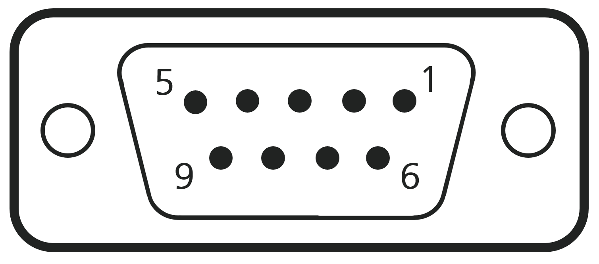

IO641/IO642 Pin Mapping
IO641/IO642 Pin Mapping — Reference information about the I/O module connector
I/O Pin Mapping for PROFIBUS DP
The 9-pin female D-sub connector provides one isolated PROFIBUS DP interface according to IEC 61158 and allows transmission according to RS-485.

| Pin | Signal | Description |
|---|---|---|
| 1 | NC | Not connected |
| 2 | NC | Not connected |
| 3 | RxD/TxD-P | Data line plus (B conductor) |
| 4 | NC | Not connected |
| 5 | DGND | Data ground |
| 6 | VP | Internal +5 V supply for bus termination |
| 7 | NC | Not connected |
| 8 | RxD/TxD-N | Data line minus (A conductor) |
| 9 | NC | Not connected |
Wiring
Use a standard PROFIBUS cable with 9-pin male D-sub sockets to connect the I/O module with external PROFIBUS devices. PROFIBUS devices are connected in a line topology with each other (from A to B, B to C, and so on). As almost every PROFIBUS device has only one connector, use Y split cables to connect multiple devices to the network.
For proper operation, a PROFIBUS topology requires terminating resistors on both ends. The IO641 and IO642 I/O modules do not include termination resistors. Instead, switchable resistors are integrated in the connectors of the PROFIBUS cable.
The IO642-32 module contains 32 PROFIBUS DP slaves, which are connected internally. You can add the module to a PROFIBUS line by connecting the PROFIBUS master or the previous slave with the Bus IN connector. You connect the next slave with the Bus OUT connector to extend the PROFIBUS line.
The IO642-32 has an internal termination resistor for the Bus OUT connector.
Moving the termination switch towards the D-sub connector, turns the termination off
Moving the termination switch away from the D-sub connector, turns the termination on
Disable the termination if Bus OUT is connected with a PROFIBUS device. Enable the termination if Bus OUT is not connected with a PROFIBUS device.